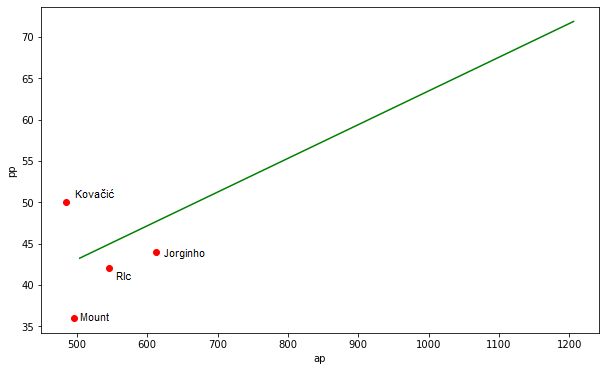
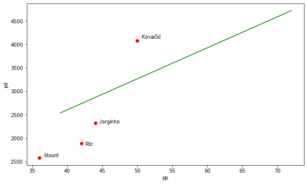
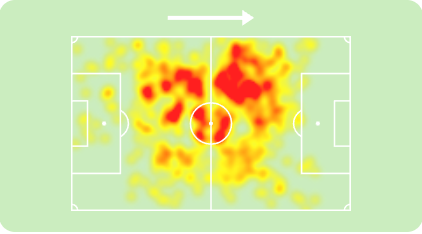
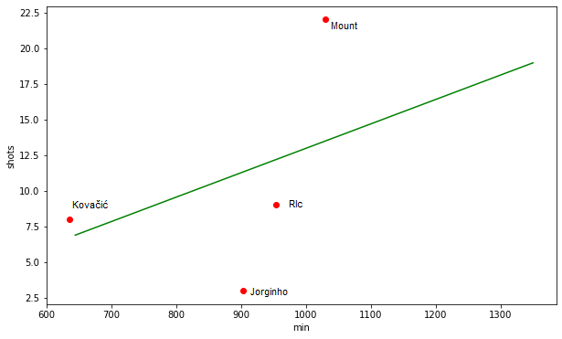

Analiza statystyk w sporcie na przykładach
Pomocnicy
W tym miejscu zajmę się analizą statystyk wybranych pomocników z angielskiej drużyny piłkarskiej- Chelsea.
Analiza będzie oparta o ich statystyki i model regresji liniowej na podstawie statystyk innych pomocników Premier League, ale również o zagadnienia taktyczne oparte na meczach.
Wybrani zawodnicy to: Jorginho, Mount, Kovačić i Ruben Loftus-Cheek.
Oto ich statystyki:
| Name | Minutes | Goals | Exp. goals | Shots | Assists | Key passes | Attempted passes | Progressive pas. | Prog. distance |
| Jorginho | 903 | 2 | 1.7 | 3 | 0 | 4 | 612 | 44 | 2324 |
| Mason Mount | 1030 | 2 | 1.5 | 22 | 2 | 18 | 496 | 36 | 1583 |
| Mateo Kovačić | 635 | 0 | 0.3 | 8 | 1 | 8 | 485 | 50 | 4072 |
| R.Loftus-Cheek | 954 | 0 | 1.8 | 9 | 0 | 7 | 554 | 42 | 1888 |
* Minutes= minuty zagrare przez zawodnika (zsumowane z 16 kolejek)
* Goals= gole strzelone przez zawodnika (zsumowane z 16 kolejek)
* Exp.goals= oczekiwane gole(xg) zawodnika (zsumowane z 16 kolejek)
* Shots= strzały oddane przez zawodnika (zsumowane z 16 kolejek)
* Assists= asysty zawodnika (zsumowane z 16 kolejek)
* Key passes= kluczowe podania zawodnika, podania prowadzące bezpośrednio do strzału (zsumowane z 16 kolejek)
* Attempted passes= wszystkie podania zawodnika (zsumowane z 16 kolejek)
* Progressive pas.= podania progresywne (skierowane do przodu) zawodnika (zsumowane z 16 kolejek)
* Prog. distance= suma odległości podań progresywnych zawodnika (zsumowane z 16 kolejek)
Statystyki zawodników zostały pobrane ze strony https://fbref.com/search/search.fcgi


Jak widać na załączonych wykresach, pomocnicy Chelsea podają rzadziej do przodu niż zawodnicy innych drużyn. Podają również krócej, zwalniając akcję.
Pozytywnie wyróżnia się tutaj Mateo Kovačić, ktry jest uważany za motor napędowy drużyny, co odzwierciedlają dane.
Bardzo często podaje do przodu względem ilości podań i są to podania większej odległości. Prowadzi to do szybszej i bardziej ofensywne gry.
Na 90 minut ma średnio ponad 6 podań progresywnych i jest w tym w najlepszych 2% pomocników Premier League, również na 90 minut ma średnio 71 podań, dzięki czemu jest w tym w najlepszych 8% pomocników Premier League.
Jeśli zaś chodzi o dryblingi, to wykonuje ponad 1 na 90 minut, co stawia go w top 18% pomocników Premier League.
Rolę taktyczną Kovačić'ia często określa się mianem mezzali. Kiedyś było ona nazywana półpomocnikiem-połskrzydłowym, co ma swoje odzwierciedlenie w grze.
Przez większość czasu gra w lewej połprzestrzeni ( wąskim pasie boiska między środkiem boiska a skrzydłem)
i stamtąd często szuka podaniem za linię obrony obiegającego wahadłowego, który czeka na obieg skrzydłem i prawdopodnie dośodkowanie. Czasem w takim momencie wchodzi w pojedynek z przeciwnikiem, najczęściej jednym z pomocników rywali.
Rzadko pojawia się w w polu karnym przeciwnika, przez co jego liczba strzałów wynosi 8 na 635 minut.


https://fbref.com/en/players/79c0821a/Mateo-Kovacic, https://www.sofascore.com/player/mateo-kovacic/136710